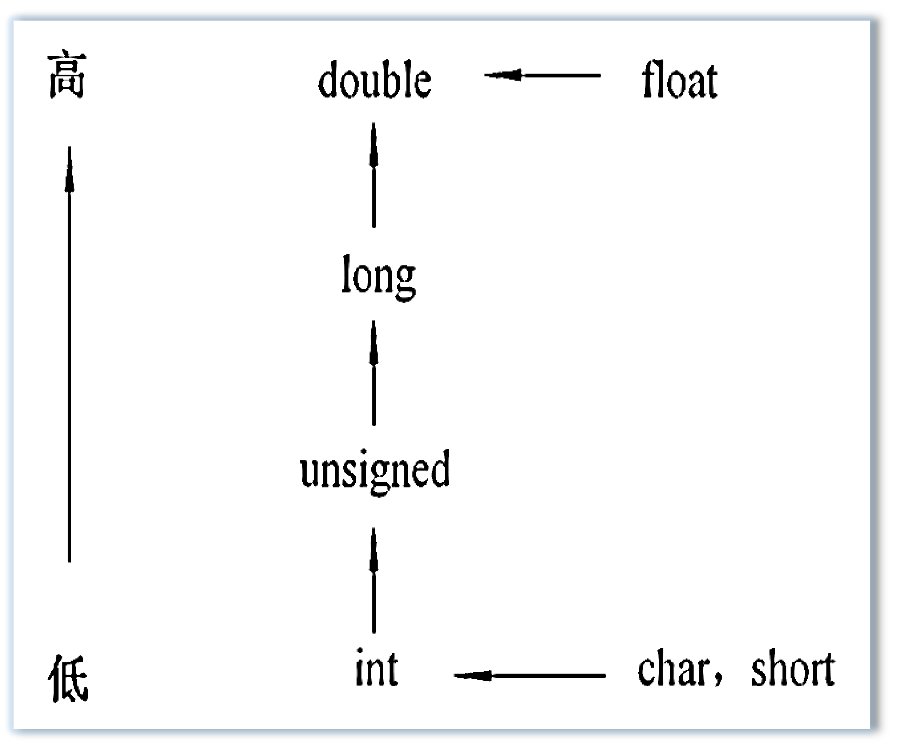
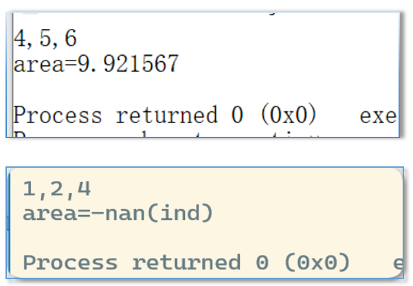

定义变量 → 计算/处理 → 输出结果
字面量、符号常量、数据类型、变量定义与初始化
格式字符、常用用法
地址表列、格式字符、常见陷阱
算术运算符、赋值运算符、数据类型转换
字符输入输出、字符与整数运算、顺序结构程序设计
判断输入是否成功
隐式、强制、混合运算
字符 I/O、字符与整数运算、缓冲区
圆面积、三角形面积等综合示例
| # | 类别 | 运算符 | 应用 |
|---|---|---|---|
| 1 | 算术 | + - * / % | 顺序 |
| 2 | 自增自减 | ++ -- | 循环 |
| 3 | 关系 | > < >= <= == != | 选择 |
| 4 | 逻辑 | ! && || | 选择 |
| 5 | 位运算 | << >> ~ | ^ & | 底层 |
| 6 | 赋值 | = += -= *= /= %= | 顺序 |
| 7 | 条件 | ? : | 选择 |
| # | 类别 | 运算符 | 应用 |
|---|---|---|---|
| 8 | 逗号 | , | 简化书写 |
| 9 | 指针 | * & | 指针 |
| 10 | 求字节数 | sizeof | 顺序 |
| 11 | 强制类型转换 | (类型) | 顺序 |
| 12 | 结构体成员 | . -> | 结构体 |
| 13 | 下标 | [] | 数组 |
| 14 | 函数调用 | () | 函数 |
scanf 的返回值是一个整数，表示成功读入的数据个数,一个都没读到，返回 0。
int x; int n = scanf("%d", &x); printf("n=%d, x=%d\n", n, x);
| 输入 | n | x |
|---|---|---|
123⏎ | 1 | 123 |
abc⏎ | 0 | 原值 |
读成功 → n=1；
读失败（遇到非数字）→ n=0，x 保持原值。
int a, b; int n = scanf("%d%d", &a, &b); printf("n=%d\n", n);
| 输入 | n | 结果 |
|---|---|---|
12 34⏎ | 2 | a=12, b=34 |
12,34⏎ | 1 | a=12, b 原随机值 |
ab⏎ | 0 | a、b 都保持原随机值 |
有几个数读成功，返回值就是几。
warning: ignoring return value of ‘scanf’ declared with attribute ‘warn_unused_result’ [-Wunused-result]
核心用途：判断输入是否成功，避免"读失败还用错数据"。
int x; scanf("%d", &x); printf("x=%d\n", x);
输入 abc 时：
· x 保持原值，通常是随机数
· 但程序毫不知情，继续往下执行
· 输出结果不可预知
int x; if (scanf("%d", &x) > 0) { printf("读入成功: %d\n", x); } else { printf("输入无效\n"); }
输入 abc 时：
· 返回值是 0，不满足 > 0 的条件
· 程序走 else 分支，提示"输入无效"
· 不会用错数据
warning: ignoring return value of ‘scanf’ declared with attribute ‘warn_unused_result’ [-Wunused-result]
直接运算，结果类型不变
1 / 2 → 两个 int，结果 0（int）
1.0 / 2.0 → 两个 double，结果 0.5
需转换为同一类型再运算
1.0 / 2 → int 转 double，结果 0.5
'a' + 3 → char 转 int，结果 100
由编译系统自动完成，程序员无需干预。
方向是：向字节数多（精度高）的类型转换。
| 规则 | 示例 |
|---|---|
| float → double |
表达式中只要有 float，一律先转 double：5 / 2.0 → 2.5
|
| char → int |
字符参与运算用 ASCII 码值：'a' + 3 → 100
|
| int → double |
5.0 / 2 → 2 转 double → 2.5
|

char ch = 1; int i = 1; float f = 1.5; double d = 1.3, dd; dd = (ch / i) + (f * d) + (f + i);
| 子表达式 | 运算类型 | 结果类型 |
|---|---|---|
ch / i | char ÷ int → int | int |
f * d | float × double → double | double |
f + i | float + int → double | double |
| 三项相加 | int + double + double | double |
| 赋给 dd | double → double | double |
原则：右边的值会转换为左边变量的类型。
整型赋给实型：
值以浮点形式存储，大小不变
int i = 10;
float f = i; → f = 10.0
实型赋给整型：
直接截断小数部分（不是四舍五入）
int i = 2.56; → i = 2
int i = 2.99; → i = 2
(类型名)(表达式)
(double)3 / 2 // 3 先转 double，结果 1.5 (double)(3 / 2) // 先算 3/2 = 1，再转 double → 1.0 (int)3.6 // 截断小数 → 3 (int)(x + 7.4) // 先算 x+7.4，再整体截断 (int)x + 7.4 // 先截断 x，再加 7.4
float x = 3.6;，(int)x 之后，x 的值还是 3.6。
float x = 3.8; int a = (int)x + 7.4; // (int)3.8 = 3，3 + 7.4 = 10.4 → a = 10 int b = (int)(x + 7.4); // x + 7.4 = 11.2，(int)11.2 = 11 → b = 11
结论：括号的位置决定了强制转换的作用范围。
float x = 2.8; x = (int)x; // x 的值变为 2.0，但 x 的类型还是 float printf("x=%f", x); // 输出 x=2.000000
| 数学表达式 | C 表达式 |
|---|---|
| \(s = \dfrac{1}{xyz}\) | s = 1.0 / (x*y*z)s = 1.0/x/y/z |
| \(s = \dfrac{1}{4}\left(x^2 + y^{-3}\right)\) | s = 0.25*(x*x + 1.0/y/y/y) |
| \(\dfrac{\tan x + \cot x}{\sin x + \cos x}\) | (tan(x) + 1/tan(x)) / (sin(x) + cos(x))注意：x 是弧度，不是角度 |
| \(\sqrt{\dfrac{e^x}{y - 2}}\) | sqrt(exp(x) / (y-2)) |
s = 0.25(x*x + 1.0/y/y/y) —— 缺少乘号 *，C 语言不会自动补乘号。也不要用 · 哦！
#include <math.h>；
② 参数个数、类型、顺序、单位要正确；
③ 注意函数返回值的类型和单位。
| 错误写法 | 原因 |
|---|---|
printf("%d", 6 * fabs(-4));
|
fabs() 返回 double，应用 %f |
printf("%f", 6 * abs(-4));
|
abs() 返回 int，应用 %d |
double d; scanf("%f", &d);
（d 是 double类型）
|
double 必须用 %lf |
float x; scanf("%d", &x);
（x 是 float类型）
|
float 必须用 %f |
ch = getchar();
等价于 scanf("%c", &ch);
putchar(ch);
等价于 printf("%c", ch);
#include <stdio.h> int main() { char ch; ch = getchar(); // 读取一个字符 printf("%c", ch); // 输出该字符 return 0; }
getchar() 从键盘接收一个字符，必须按回车才结束读取。getchar() 返回值为从键盘接收到的字符。
#include <stdio.h> int main() { putchar(65); // 输出 'A'（ASCII 65） putchar('A'); // 输出 'A' putchar('a'-32); // 输出 'A' return 0; }
AAA —— 三种写法，结果都是字符 A。
char ch = 'A'; int result = ch + 10; // 65 + 10 = 75 printf("%c", result); // 输出 'K' (ASCII 75)
大写转小写：ch = ch + 32;
小写转大写：ch = ch - 32;
字符转数字：int num = ch - '0';
数字转字符：char ch = num + '0';
'8'、'5'、'2'、'0' 拼成整数 8520：value = (d1-'0')*1000 + (d2-'0')*100 + (d3-'0')*10 + (d4-'0');
%c 读字符时，空格、回车、Tab 都是有效字符，会被原样读入。
#include <stdio.h> int main() { char a, b, c; scanf("%c%c%c", &a, &b, &c); printf("[%c][%c][%c]\n", a, b, c); return 0; }
| 输入 | 输出 |
|---|---|
ABC⏎ |
[A][B][C] ✅ |
A B C⏎ |
[A][ ][B] ❌ |
A⏎ B⏎ |
[A][⏎][B] ❌ |
A、B、C 三个字符，
必须连续输入 ABC，中间不能加空格或回车。
123，求各位数字之和 → 6
int x, a, b, c;
scanf("%d", &x);
a = x / 100;
b = x / 10 % 10;
c = x % 10;
printf("%d", a+b+c);
输入：123⏎
输出：6 ✅
与题目"输入一个三位整数"格式完全一致
int a, b, c;
scanf("%d%d%d", &a, &b, &c);
printf("%d", a+b+c);
输入：1 2 3⏎
输出：6
格式与题目不符，
题目要求输入"一个整数"，输入时必须加空格
scanf("%d", &x); 读入，再用 / 和 % 拆分。char a, b, c;
scanf("%c%c%c", &a, &b, &c);
printf("%d", a+b+c-3*'0');
输入：123⏎
读到 '1' '2' '3'
把整数当字符处理，需手动转数字，
可读性差，不推荐
int a, b, c;
scanf("%1d%1d%1d", &a, &b, &c);
printf("%d", a+b+c);
输入：123⏎
输出：6
依赖 %1d 的宽度限定，
代码不通用，不推荐
// 问题代码（有 Bug） int choice; char confirm; printf("请输入您的选择（1-3）："); scanf("%d", &choice); printf("确认继续吗？(y/n)："); confirm = getchar(); // ← 这里读到的是回车符！
输入整数后按回车，回车符留在缓冲区；
紧接着的 getchar() 直接读走这个回车符，
而不是等用户输入 y 或 n。
getchar() 前加一个 getchar(); 吃掉回车；scanf(" %c", &ch);（%c 前加空格）跳过前面所有空白字符。scanf("%d ", &choice);（%d 后加空格也可以）表示忽略整数之后的所有空白字符。getchar(); 读取空白字符后输入的第一个非空白字符。
场景：输入一个大写字母，输出对应的小写字母。
#include <stdio.h> int main() { char ch; ch = getchar(); putchar(ch + 32); // 大写转小写 putchar('\n'); return 0; }
输入：A⏎
输出：a
场景：输入 3 个数字字符，拼成一个 3 位整数。
#include <stdio.h> int main(){ char d1, d2, d3; int value; scanf("%c%c%c", &d1, &d2, &d3); value = (d1 - '0') * 100 + (d2 - '0') * 10 + (d3 - '0'); // ← 字符转数字'1' - '0' = 1 printf("value = %d\n", value); return 0; }
输入：123⏎
输出：value = 123
%c 不跳过空格，连续输入不能加分隔符；
② 字符参与运算时用的是 ASCII 码，不是字符本身；'1' - '0' = 1。
单独一个分号 ;
语法上是一条语句，不做任何操作
表达式加分号a + b;
x = 5;
由赋值表达式加分号构成a = b + 3;
函数调用加分号printf("Hi");
用 { } 括起来，语法上等同一条语句{ t=a; a=b; b=t; }
if、switch、while、for、break、continue、goto、return
#include <stdio.h> #define PI 3.14 int main() { double r, c, s; scanf("%lf", &r); c = 2 * PI * r; s = PI * r * r; printf("c=%lf,s=%lf\n", c, s); return 0; }
#include <stdio.h> #include <math.h> int main() { double x, y; scanf("%lf", &x); y = fabs(1 - pow(x, 3.6)); printf("y=%.3f\n", y); return 0; }
#include <math.h>double x,y;pow(x, 3.6) fabs() %.3f 输出保留 3 位小数#include <stdio.h> #include <math.h> int main() { float a, b, c, s, area; a = 3; b = 4; c = 6; s = 1.0/2 * (a + b + c); area = sqrt(s*(s-a)*(s-b)*(s-c)); printf("area=%.2f\n", area); return 0; }
1.0/2 保证结果是实数，切记不能写成1/2
sqrt() 求平方根，需要
math.h

下一讲：第 3 章 选择结构程序设计